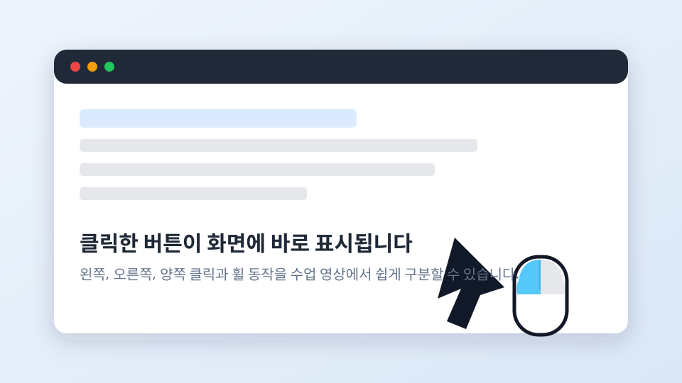
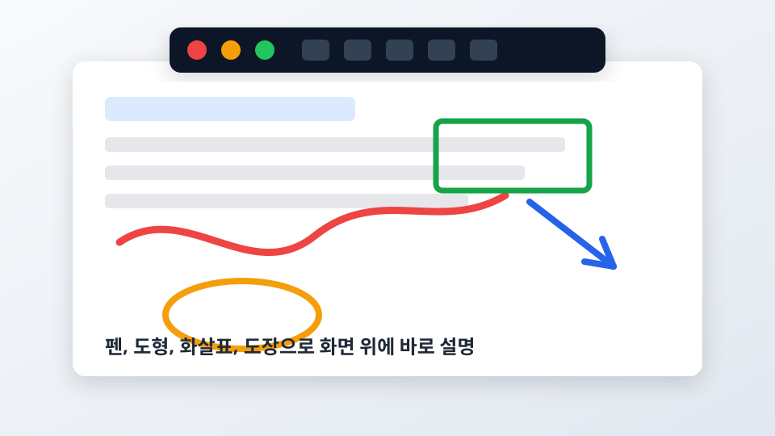

M마우스 클릭 표시
왼쪽 클릭, 오른쪽 클릭, 양쪽 동시 클릭, 휠 클릭, 휠 드래그, 더블클릭을 구분해서 보여줍니다. 온라인 강의나 녹화 영상에서 조작 과정을 따라오기 쉬워집니다.
수업, 발표, 온라인 강의, 화면 시연을 도와주는 가벼운 Windows 화면 보조 도구입니다.
현재 배포 버전: 0.1.0.0 · Windows 10 / Windows 11 · MIT License
GitHub Releases에서 최신 배포 파일을 받을 수 있습니다. 압축을 푼 뒤 폴더 안의 ScreenAidStudio.exe를 실행하면 됩니다.
0.1.0.0 배포 파일 직접 다운로드 주소입니다. Release의 Assets에 같은 파일명으로 업로드되어 있어야 합니다.
ScreenAid Studio는 수업이나 발표 중 화면 위에 바로 표시를 남기는 프로그램입니다. 사용자가 어디를 클릭했는지 보여주고, 중요한 영역에 선이나 도형을 그리며, 작은 화면 일부를 크게 고정하거나 실시간으로 띄울 수 있습니다.
PowerPoint, 한글, Excel, Chrome, 개발 도구처럼 평소 쓰는 프로그램 위에서 동작하도록 만들었습니다. 필요할 때만 표시하고, 그리기 모드가 아닐 때는 아래 프로그램 조작을 방해하지 않는 것을 목표로 합니다.


위 이미지는 소개용 미리보기입니다. 실제 프로그램 캡처 PNG가 준비되면 같은 위치의 이미지 파일만 교체해 소개 페이지를 더 실제 화면에 가깝게 만들 수 있습니다.
왼쪽 클릭, 오른쪽 클릭, 양쪽 동시 클릭, 휠 클릭, 휠 드래그, 더블클릭을 구분해서 보여줍니다. 온라인 강의나 녹화 영상에서 조작 과정을 따라오기 쉬워집니다.
펜, 형광펜, 직선, 화살표, 사각형, 원, 도장, 지우개를 제공합니다. 색상, 굵기, 선 모양을 바꿔 발표 자료나 실습 화면 위에 즉석 주석을 남길 수 있습니다.
원하는 영역을 캡처하고, 캡처한 이미지를 테두리 없는 창으로 고정합니다. 마우스 휠로 확대/축소하고 드래그로 이동할 수 있습니다.
선택한 영역을 계속 갱신하는 작은 창으로 보여줍니다. 작은 글씨, 실습 결과 영역, 다른 모니터 일부를 크게 보여줄 때 유용합니다.
Ctrl + Alt + A를 누른 뒤 한 글자 키로 기능을 실행합니다. 단축키는 설정창에서 바꿀 수 있습니다.
기본 언어로 한국어와 영어를 제공합니다. 언어 파일을 추가하는 방식으로 다른 언어 확장도 고려한 구조입니다.
| 사용 상황 | 도움이 되는 기능 |
|---|---|
| 교실 수업과 온라인 강의 | 클릭 표시, 펜 주석, 형광펜, 도장으로 학생이 봐야 할 부분을 빠르게 강조합니다. |
| 프로그램 사용법 녹화 | 왼쪽/오른쪽/휠 클릭 표시로 어떤 조작을 했는지 영상에 남깁니다. |
| 기술 시연과 개발 설명 | 코드 일부나 실행 결과 영역을 고정 화면 또는 실시간 화면으로 크게 보여줍니다. |
| 발표와 회의 | 도형, 화살표, 원으로 발표 자료 위 핵심 위치를 즉석에서 표시합니다. |
| 순서 | 방법 |
|---|---|
| 1. 다운로드 | 위의 최신 버전 다운로드 버튼을 눌러 GitHub Releases 페이지로 이동합니다. |
| 2. 파일 받기 | Release의 Assets에서 ScreenAidStudio.zip 압축 파일을 다운로드합니다. |
| 3. 압축 풀기 | 원하는 위치에 압축을 풉니다. 예: D:\수업 활용 프로그램\ScreenAidStudio |
| 4. 실행 | 폴더 안의 ScreenAidStudio.exe를 더블클릭합니다. |
| 5. 사용 | 트레이 아이콘을 더블클릭해 설정을 열거나, Ctrl + Alt + A로 명령 모드를 엽니다. |
중요: ScreenAidStudio.exe만 따로 꺼내서 실행하지 마세요. _internal, resources, docs, locales, config 폴더가 함께 있어야 정상 실행됩니다.
| 단축키 | 기능 |
|---|---|
| Ctrl + Alt + A | 명령 모드 열기 |
| 명령 모드에서 D | 그리기 모드 켜기/끄기 |
| 명령 모드에서 K | 영역 선택 후 고정 화면 열기 |
| 명령 모드에서 G | 실시간 화면 영역 선택 |
| Ctrl + Alt + E | 클릭 표시 임시 숨김/표시 |
ScreenAid Studio는 MIT License 기준으로 제공됩니다. 저작권자는 JunoSsam이며, 개인, 공공기관, 교육기관, 학교, 강의, 발표, 비영리 및 상업 환경에서 자유롭게 사용할 수 있습니다.
본 프로그램은 생성형 인공지능을 활용한 바이브 코딩 방식으로 개발되었습니다.